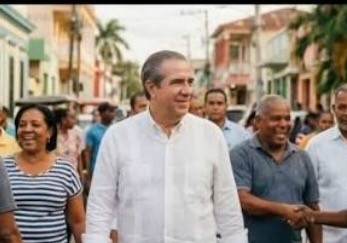

"El turismo fue el inicio.
El país entero es el destino."

Propuestas concretas basadas en ejecución probada, no en promesas vacías.
Diversificar la economía nacional replicando el modelo de atracción de inversión y generación de empleo del turismo en industria, tecnología y agroindustria.
Sistema de seguridad basado en inteligencia policial, tecnología y coordinación interinstitucional. El mismo rigor con que se protegió el turismo, ahora para todos.
Transformar la educación técnica y vocacional en el motor de la nueva economía dominicana, conectando a los jóvenes con las demandas reales del mercado laboral.
Modernizar el sistema de salud pública con gestión eficiente, tecnología médica y atención primaria reforzada en todo el territorio nacional.
Descentralizar el desarrollo llevando infraestructura, conectividad y oportunidades a cada provincia, eliminando la brecha entre la capital y el interior.
Un modelo de desarrollo nacional basado en ejecución probada. No improvisación. No promesas vacías. Resultados que ya conoces, escalados a toda la nación.
Nacido en San Francisco de Macorís. Abogado y economista. Servidor público por convicción.
Hipersegmentación, conversión directa y comunidad. El modelo digital dominicano.
Protocolo de 3 niveles — War Room Digital activado ante cualquier escenario.
Súmate a la campaña que transformará el éxito del turismo en prosperidad para todo el país.